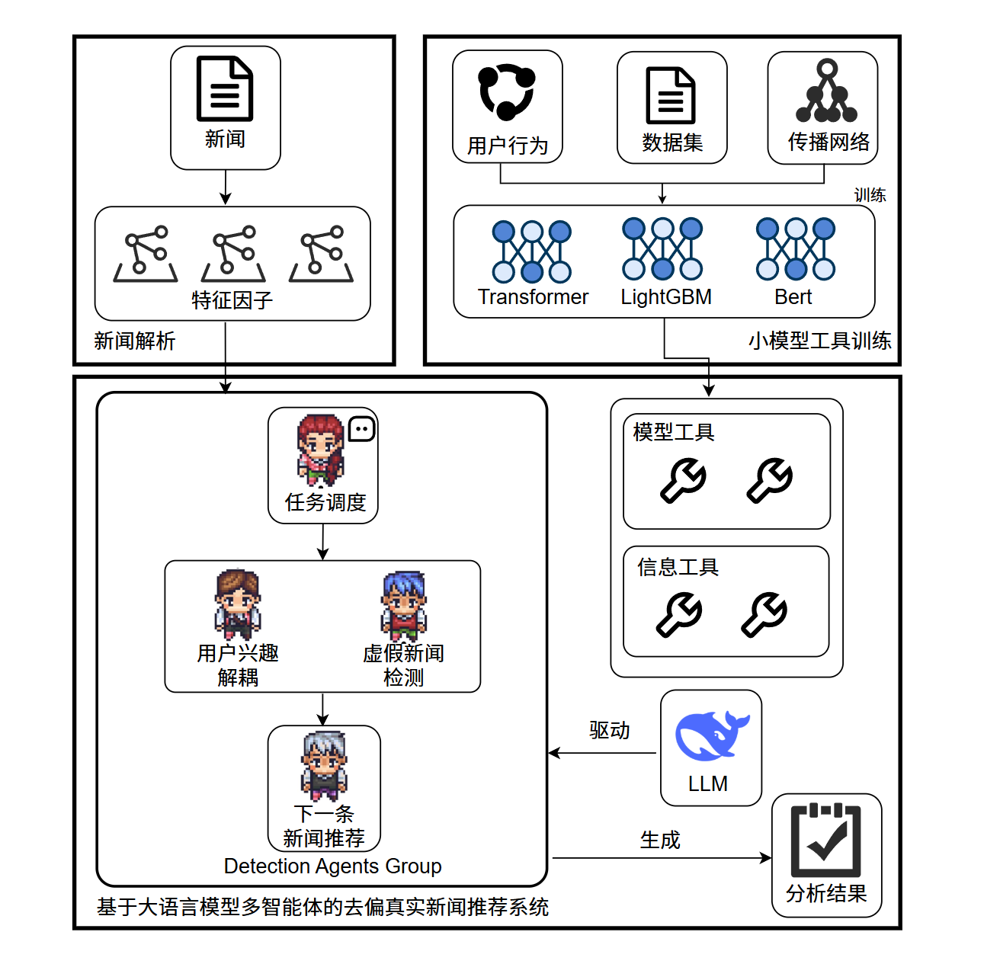

Multi-Agent Fake News Detection System with Reflection and Iterative Learning
Project Leader · Advisor: Prof. Min Gao
Proposed a CrewAI-based detection framework that combines fast judgment, dynamic fact-checking, comprehensive reasoning, reflection triggers, and structured experience memory. The system improved F1-scores on PolitiFact and GossipCop compared with several baseline methods.
Multi-agent systems
Reflection
Experience memory
Fake news detection